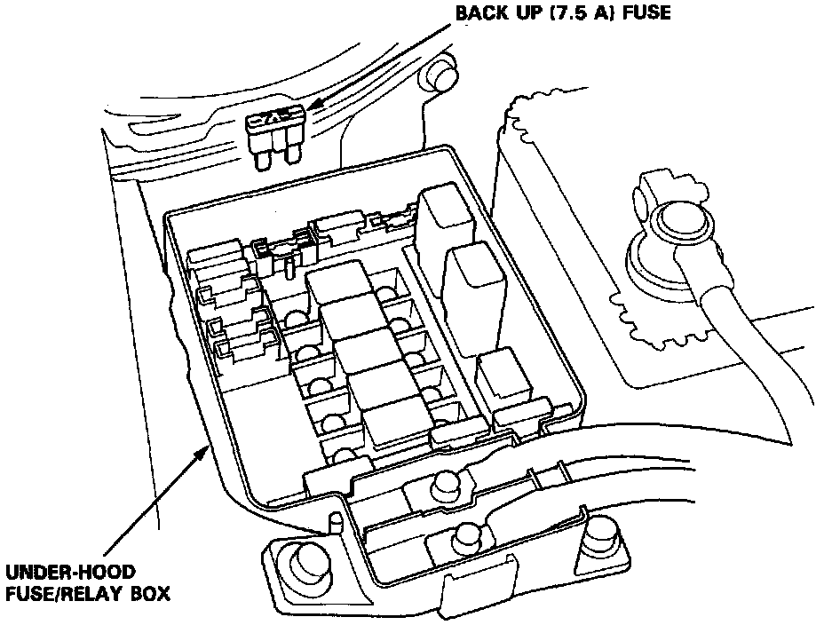

Without Scan Tool
DLC & SCS Connector Locations:

1. Turn the ignition switch off.
2. Install the two pin Service Check Connector (SCS) in the dummy connector block located under the glovebox hinge.
NOTE: If the SCS service connector is left with its two pins connected together and there are no Diagnostic Trouble Codes (DTC) stored in the Engine Control Module (ECM), the Malfunction Indicator Light (MIL) will stay illuminated when the ignition switch is turned ON.
Back-Up Fuse Location:

3. After performing all necessary repairs, remove the "BACK UP" fuse (7.5A) from the under-hood fuse/relay box for 10 seconds. This will reset the ECM fault code memory.
NOTE: Disconnecting the "BACK UP" fuse (7.5A) also cancels the anti-theft/radio presets and clock settings. Make note of the presets (and anti-theft radio codes if so equipped) before removing the fuse.